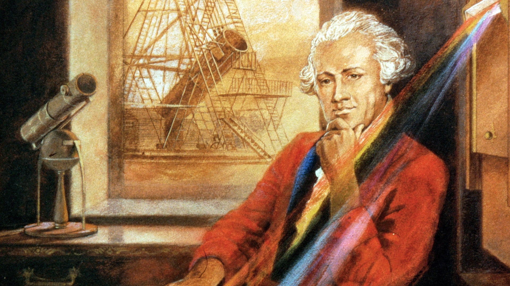
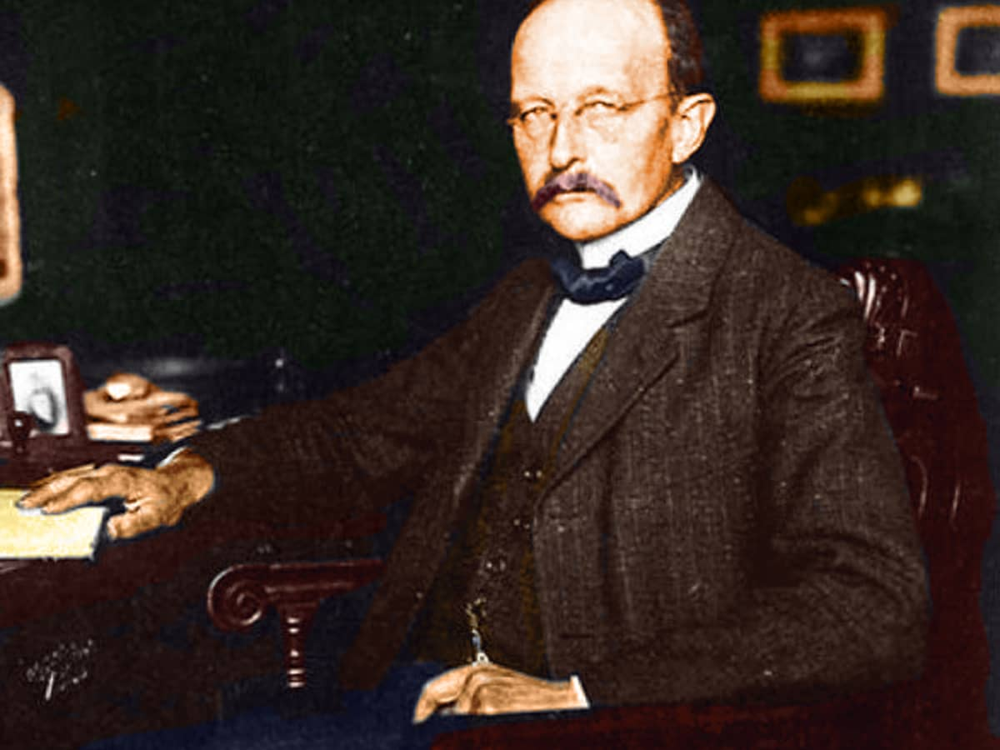
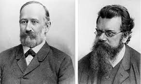

"The process of hiding and disruption is termed as camouflage, and it is widely
adopted by military for the purpose of disguising strategic and tactical objects from the
foe. The inspiration of camouflage is from Chameleon. The main
aim of camouflage technology is to conceal the military object signatures, making
them invisible to the foe."
In 2011, BAE systems presented adaptive clocking technology for military armoured vehicle,
which was practically deployed on combat vehicle (CV90). Which incorporates active heating and
cooling elements for transformation of background thermal pattern on it - by the aids of thermal
imaging cameras. This modular design was officially patented and is known as ADAPTIV
.
ADAPTIV - MOdular design
Infrared Radiation
Every object above absolute zero 0 K (-273.1 °C or -459.7 °F) emits radiation on the IR
spectrum.
Infrared IR radiation is the electromagnetic EM spectrum, where the prefix infra has
its origin from the Latin word, which means below.
Hence the term infrared refers to the radiation spectrum beyond the red region of
visible spectrum.
IR sub regions
NIR [0.7µm - 1.4µm]
SWIR [1.4µm - 3µm]
MWIR [3µm - 8µm]
LWIR [8µm - 14µm]
FIR [14µm -1000µm]
Sir William Hershel:
The discovery of IR spectrum is officialy credited to Willam
Hershel in 1800, a British astronomer.
An experiment performed by Isaac Newton pique Hershel's interest,
in which the white light from the sun splits into a color spectrum with the aids
of glass prism. For the purpose of measuring the temperature of different colors.
Hershel's experimental setup includes a glass prism, pasteboard and
three thermometers
By placing thermometers under red, green and violet lights,
he observed increasing heating effects from violet to red light.
By repeating the experiment with scaled paper, he observed a maximum heating effect
at a distance of (1/2) inch beyond the red light in the invisible
region. Thus discovering the new region of EM spectrum, termed as
IR spectrum.
He also concluded that the radiated IR energy also experiences reflection and refraction
as the visible spectrum.

Sir John Hershel:
John Hershel in 1840, proceeded his father experiment
Sir William Hershel, creating the thermal radiation image kown as
thermogram by evaporation of alcohol and carbon particle mixture when
focusing solar radiation on it.
James Clerk Maxwell:
James Clerk Maxwell laid the theoratical foundation of
EM radiation in 1864, infering that the change in electric current
results in the creation of electric and magnitic fields known as EM
radiation.
Max Planck:
In 1900 Max Planck proposed that the propogation of
EM radiation in the form of discrete packets known as photons.

Joseph Stefan:
In 1879 Joseph Stefan experimentally determined the
total emitted thermal power od the body in (W/m2) over
all wavelengths and was verified theoratically by Ludwig Boltzmannin 1884.

Willy Wien:
In 1894 Willy Wien developed the relation between the object temperature
and its radiated wavelength.
As the object temperature increases above 800K, objects starts to radiate in the visible
portion ans well as in the IR portion and the peak of maximum radiance shifts
towards shorter wavelengths. Thus the amount of radiant energy provides a fair indication of object's temperature.
The Blacksmith of the ancient era recognize the time of quenching and tempering the metal from the colors
of heated glowing metal.